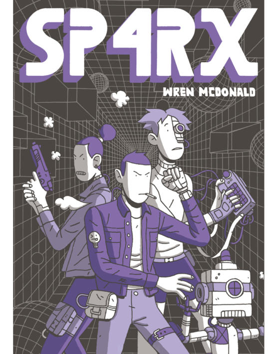
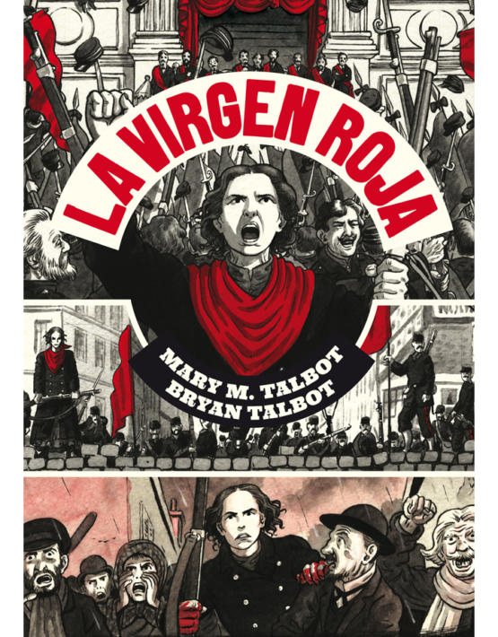
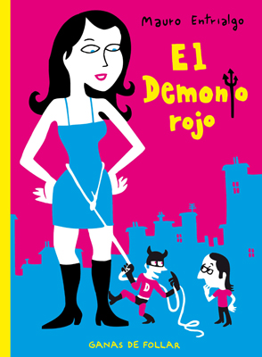

Nazario
Anarcoma. Obra gráfica completa
Ha pasado mucho tiempo desde que Anarcoma, el detective travesti, viese la luz en las páginas de la prensa más insolente de los primeros años 80. Pero el mito sigue arañando el pavimento con sus tacones de aguja…
34,90€
Previsualizar Añadir


Max
Peter Pank Integral
Peter Pank es el personaje más carismático y popular de los creados por la mente genial de Max. Este punkie de rasgos aguileños y maneras radicales se ha convertido en símbolo de una juventud eternamente peleadora que no acepta las reglas impuestas por la sociedad. Y es que la lección de Peter Pank está clara: si no puedes cambiar tu sociedad… ¡perviértela!
22,00€
Previsualizar Añadir


Ana Oncina
Croqueta y Empanadilla 1
Croqueta y Empanadilla es tierno, divertido, y transmite un increíble buen rollo. ¡Para comérselos!
12,20€
Previsualizar Añadir


Wren McDonald
Sp4rx
La primera novela gráfica de Wren McDonald es un relato de ascendencia ciberpunk donde la acción frenética, las preocupaciones políticas y el espíritu geek conviven para sentenciar el destino de la humanidad.
13,90€
Previsualizar Añadir


Daniel Clowes
Ghost World
Daniel Clowes conjura una historia tan tierna como objetiva, capturando los temores mundanos y las tragedias cotidianas de dos jóvenes que ya no son niñas, pero que tampoco son aún mujeres.
12,90€
Previsualizar Añadir

Sibylline / Jérôme D’Aviau
Primeras veces
Un verdadero manifiesto por el placer.
18,00€
Previsualizar Añadir

Bryan Talbot / Mary M. Talbot
La virgen roja
Mary M. Talbot y Bryan Talbot reconstruyen la vida y las circunstancias de una mujer extraordinaria siempre fiel al signo de la bandera negra y perseverante en sus ideales feministas.
18,90€
Previsualizar Añadir


Erik Kriek
Lovecraft: Desde el Más Allá
Ha pasado mucho tiempo desde que Anarcoma, el detective travesti, viese la luz en las páginas de la prensa más insolente de los primeros años 80. Pero el mito sigue arañando el pavimento con sus tacones de aguja…
14,50€
Previsualizar Añadir


Max
Rey Carbón
La palabra latina filum significa por igual hilo, contorno y perfil. Max imagina, a partir de la fábula de Plinio, una historia en la que hilo (narrativa) y contorno (imagen) son una y la misma cosa, y nos propone un flujo visual libre en el que el dibujo habla por sí mismo y sobre sí mismo.
16,90€
Previsualizar Añadir


Emily Carrol / Laurie Halse Anderson
Cuéntalo
Desde que comienza su primer año en el instituto Merryweather, Melinda sabe que forma parte de una gran mentira. Algo sucedió una noche del verano anterior que la ha convertido en una marginada y se ve incapaz de verbalizar lo ocurrido. Ahora no tiene amigos, nadie quiere hablar con ella y mucho menos escucharla. Entonces ¿qué sentido tendría hablar?
26,50€
Previsualizar Añadir

Noah Van Sciver
Fante Bukowski
¡A LA VENTA EL 10 DE ENERO DE 2019!
13,50€
Previsualizar Añadir


Leela Corman
Intimidades
Una novela gráfica hipnótica y desgarradora sobre la vida de los inmigrantes en el Lower East Side de Nueva York a principios del siglo XX, vista a través de los ojos de dos hermanas gemelas cuyas vidas toman trágica y radicalmente caminos diferentes.
18,50€
Previsualizar Añadir


Carlos García, Perro
Camaleón (rústica)
Camaleón es una obra gráficamente imbatible, toda ella fibra, y sin duda uno de los secretos mejor guardados del cómic español.
13,50€
Previsualizar Añadir


Juaco Vizuete
El Resentido
El Resentido es un emblema del hombre joven en plena confusión emocional.
18,00€
Previsualizar Añadir


Mauro Entrialgo
El demonio rojo: Ganas de follar
No podría titularse de otra forma más definitoria: ganas de follar.
18,00€
Previsualizar Añadir


Robert Crumb
Génesis (Edición rústica)
El primer libro del Pentateuco, tan exuberante en su temario como rico en imágenes, ha sido una tentación para artistas gráficos de todos los tiempos, si bien nadie hasta ahora había abordado una adaptación tan objetiva y detallada como la que aquí presenta Robert Crumb.
19,50€
Previsualizar Añadir